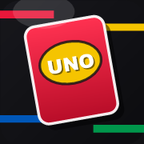

iPad Apps
GitHub Pages

>
UNO Tracker
Winner scoring, session history, and live stats.
>
Color Chase
Tap the matching card before the clock runs out.
>
Snake
Classic grid snake with handheld-style touch controls.